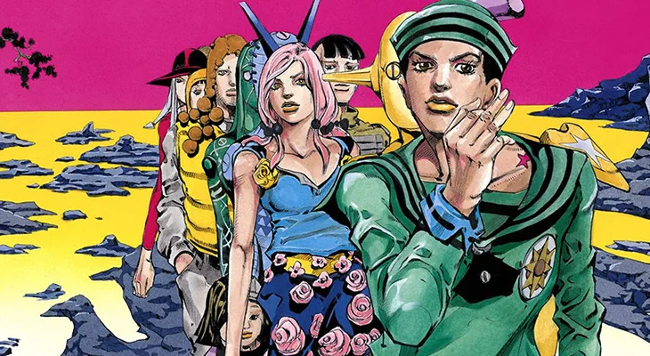
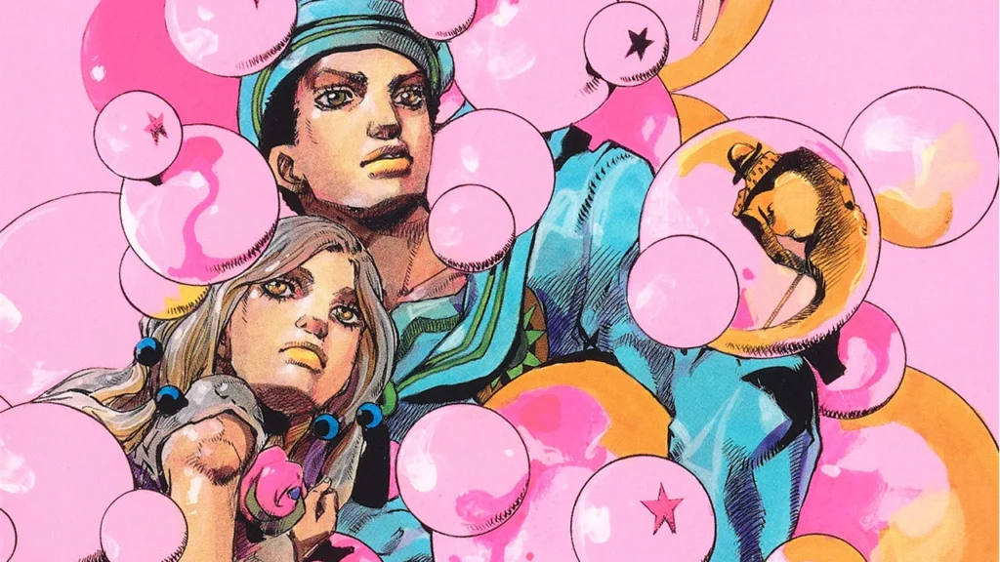

JoJo's Bizarre Adventure
JoJolion (ジョジョリオン JoJorion) é a premiada oitava parte de JoJo's Bizarre Adventure, que foi serializada na Ultra Jump de maio de 2011 a agosto de 2021.
JoJolion representa a segunda parte da série ambientada no universo Steel Ball Run.
Resumo
Após o terremoto e tsunami de Tōhoku em 2011, estranhas estruturas conhecidas coloquialmente como Paredes Oculares aparecem perto da costa da cidade de Morioh, com o solo abaixo delas ganhando a capacidade de trocar características de objetos enterrados nela. Uma estudante universitária local chamada Yasuho Hirose encontra um misterioso jovem amnésico enterrado sob uma das Paredes Oculares, que ela decide nomear temporariamente de "Josuke", e os dois partem para recuperar suas memórias e identidade. Yasuho conduz sua investigação enquanto deixa o jovem aos cuidados da família Higashikata, levantando a hipótese de que Josuke está ligado a um médico desaparecido chamado Yoshikage Kira. Enquanto Yasuho visita a mãe doente terminal de Kira, Holy Joestar-Kira, Josuke descobre que ele é uma fusão de Kira e outra pessoa. Quando Josuke mais tarde confronta o patriarca da família, Norisuke Higashikata IV, sobre seus motivos para acolhê-lo, ele descobre que a família Higashikata precisa das memórias de Kira para acabar com uma maldição familiar que petrifica cada um de seus primeiros filhos. Kira estava envolvida com uma fruta chamada Locacaca, que pode curar uma parte do corpo do consumidor enfraquecendo outra. Norisuke continua sem saber que seu filho mais velho, Jobin, tem obtido e vendido ilegalmente Locacaca em coordenação com um grupo de seres misteriosos baseados em pedras chamados Humanos de Pedra, que buscam eliminar Josuke e ascender na hierarquia da sociedade.
Josuke descobre mais tarde que antes de seu despertar, Kira e um certo Josefumi Kujo enxertaram um galho de Locacaca em uma árvore do pomar Higashikata, criando um novo tipo de Locacaca que usa outra pessoa como garantia para o processo de cura. Depois que Kira foi mortalmente ferido pelos Humanos de Pedra, Josefumi usou a nova Locacaca para curá-lo quando os dois caíram no local das futuras Paredes Oculares. Percebendo que é uma fusão de Josefumi e Kira, Josuke resolve recuperar a nova fruta Locacaca e usá-la para curar Holy, assim como Kira e Josefumi pretendiam. Enquanto isso, a mãe de Jobin, Kaato, sai da prisão após uma sentença de 15 anos por matar uma criança para salvar a vida de Jobin. Mesmo quando Jobin se reúne com sua mãe, ele mantém para si mesmo seu plano de usar a filial da Locacaca para curar seu próprio filho, Tsurugi. A pedido de Norisuke, Josuke se encontra com um avaliador de plantas chamado Rai Mamezuku, que ele leva ao pomar Higashikata para identificar o ramo Locacaca. Ao mesmo tempo, a aliança de Jobin com os Humanos de Pedra vacila, eventualmente forçando-o a incendiar o pomar para impedir que Josuke e os Humanos de Pedra obtenham o galho. No final das contas, dois Humanos de Pedra em uma ambulância aparecem para tomar a nova filial da Locacaca, sem saber que Tsurugi enganou eles e o grupo de Josuke usando seu próprio Stand; na realidade, a filial permanece em posse de Jobin. Depois de derrotar um dos Humanos de Pedra se passando por médico, os três heróis planejam caçar o diretor do hospital.
O grupo encontra um estagiário do hospital chamado Toru, que os aponta na direção do diretor do hospital, Satoru Akefu. Ao tentar persegui-lo, os três são atacados pelo poderoso Stand baseado em calamidades de Akefu, Wonder of U, sendo forçados a recuar depois que um espectador é morto. Enquanto se escondiam da polícia, Josuke e Mamezuku são novamente atacados por Wonder of U, levando-os a perceber que o Stand é acionado pela intenção de persegui-los. Josuke se machuca deliberadamente para ser levado ao hospital, com a intenção de fazer o diretor do hospital persegui-lo. Enquanto ele e o diretor do hospital perseguem Josuke simultaneamente, Mamezuku percebe que Satoru Akefu é o próprio Stand. Mamezuku é mortalmente ferido por Akefu, mas revela o Spin latente na habilidade de Josuke quando ele morre. Enquanto isso, Yasuho continua com sua suspeita de que o ramo está com os Higashikatas, eventualmente revelando o ramo para a família por acidente. Norisuke confronta Jobin, que o incapacita; O próprio Jobin é morto pouco depois por uma calamidade. Quando Toru chega à propriedade Higashikata, Yasuho percebe que Toru é o Usuário do Stand de Wonder of U. Yasuho liga para Josuke e o informa sobre suas descobertas. Akefu escapa do ataque de Josuke, mas Josuke e Yasuho combinam suas habilidades com o poder do Spin para atacar Toru com uma bolha transitória. Um Toru gravemente ferido come uma fruta madura do galho e tenta iniciar uma troca, apenas para ser preso no chão por Kaato. Kaato força Toru a trocar com Tsurugi e receber sua maldição, matando Toru e ela mesma. A última filial da nova Locacaca é destruída no processo.
Josuke e Yasuho visitam Holy no hospital após se reunirem. Embora Yasuho vislumbre a mãe de Josefumi no estacionamento, Josuke decide não se apresentar a ela, pois aceitou não ser Josefumi nem Kira. Os dois se encontram com o que resta da família Higashikata em uma confeitaria, enquanto a família tenta escolher um bolo para comemorar a alta de Norisuke do hospital. A família eventualmente decide deixar a decisão para Josuke enquanto Yasuho se despede, satisfeita por Josuke ter encontrado uma família amorosa e uma nova vida.